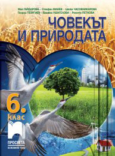

ТЕСТ № 1

Задача 1: Автомобил се движи със скорост 12 m/s. Какъв път ще измине за 20 секунди?
Задача 2: При кои условия автомобил би имал най-малък спирачен път?
Задача 3: Самолет се движи със скорост 144 km/h. За колко време (в минути) ще измине 72 000 m?
Задача 4: Автомобил се движи със скорост 21,6 km/h. Пресметнете пътя, който ще измине автомобилът за 3 минути и 20 секунди.
Задача 5: Каква е траекторията (права или крива линия) на:
а) топка, която е хвърлена вертикално нагоре;
б) топка, която е хвърлена под ъгъл спрямо земята;
в) катер, който прави завой.
Задача 6: Каква е скоростта на камион, който за 3 часа и 20 минути изминава 240 km?
Задача 7: Спортист прави пет обиколки на стадион с диаметър 200 m. За колко време е направил обиколките, ако средната му скорост е 9 km/h?